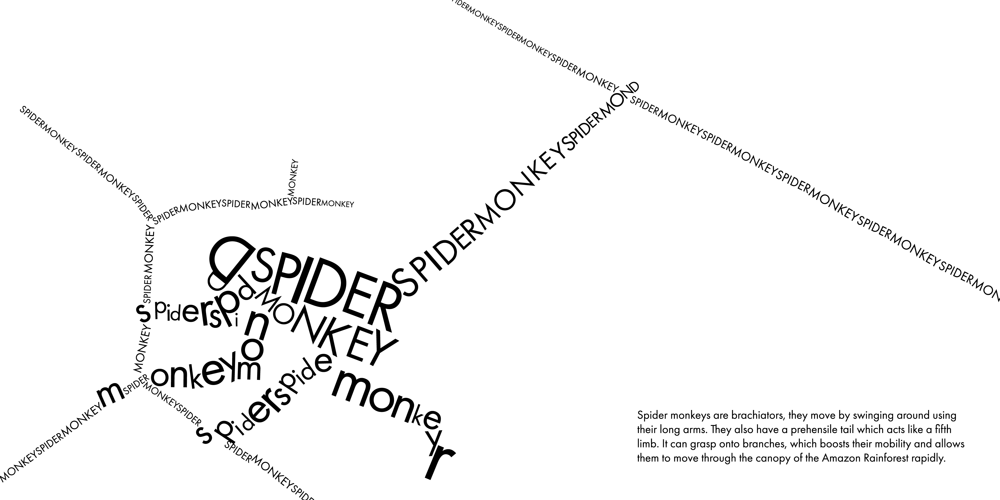
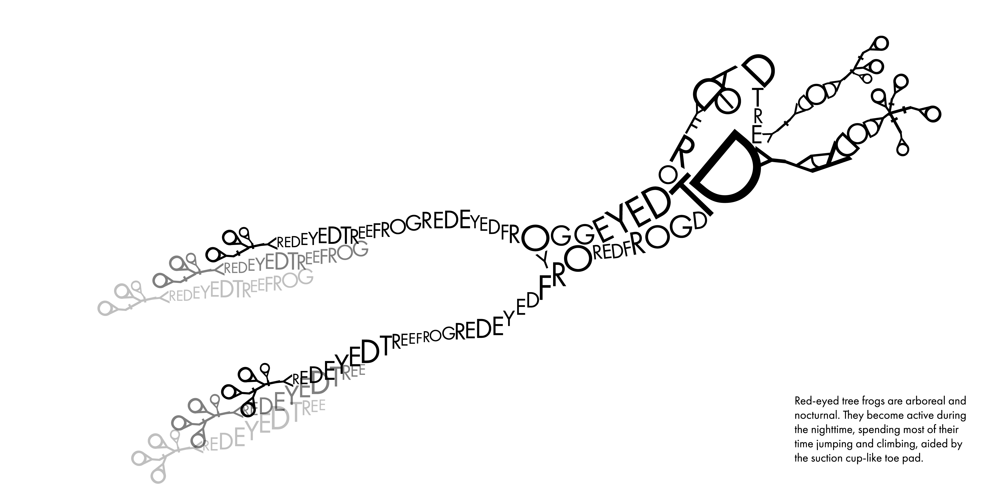
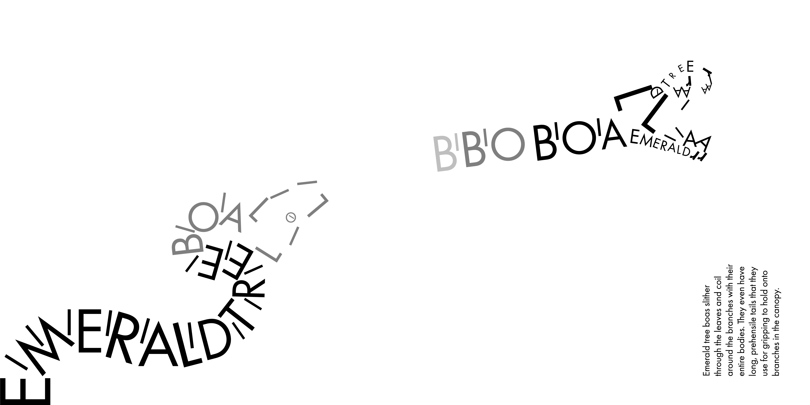
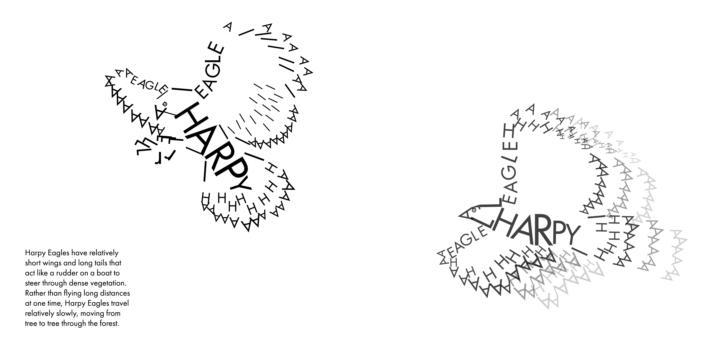

Type Book




The typebook is consisted of animals from the Amazon rainforest recreated using only the letters of the animals name.
The focus of the project was to make the animals seem in motion using only type. This was achieved through playing with
opacity and afterimages to give the illusion of movement along with dynamic posing to suggest the motion of the animal.